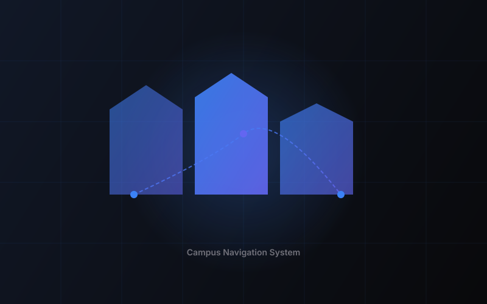

Дипломный проект
3D-система навигации по кампусу университета (ЛГУ)

Информационная система навигации по кампусу университета. Пользователь может найти нужное помещение, увидеть его в 3D и построить маршрут внутри здания. Проект решает реальную проблему — сложность ориентации на большой территории кампуса.
Клиентская часть — статический frontend с Three.js-сценой. Backend на PHP обрабатывает запросы к PostgreSQL. 3D-модели экспортируются из Blender в GLB и загружаются в WebGL-сцену.
База хранит данные о зданиях, этажах, помещениях и связях между ними. Использую SQL-запросы для поиска и фильтрации помещений.
WebGL-сцена с загрузкой GLB-моделей, камерой, освещением и интерактивным выбором объектов. Оптимизирована для браузера.
3D-модели корпусов и макета района созданы в Blender, экспортированы в GLB для web-загрузки.
Реализован поиск помещений по названию и построение маршрута между точками внутри здания.
Fullstack-подход: от проектирования БД и backend до 3D-интерфейса. Понял, как связать WebGL, данные и пользовательский сценарий в одном продукте.